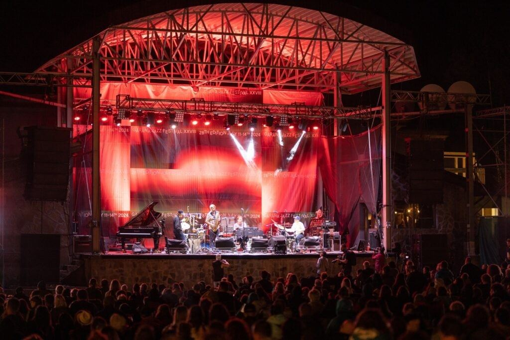

Festivals · Music
Gărâna Jazz Festival 2027
- Dates
- –
- Venue
- Poiana Lupului, Gărâna
- Location
- Gărâna, Romania
- Format
- In-person
- Category
- Music
- Industry
- Jazz festival
- Organiser
- Gărâna Jazz Festival
- Official website
- https://garana-jazz.ro/
About
Official page HTML title still says “Gărâna Jazz Festival 2026” and a 2026 line-up remains listed; official 2027 days and the Poiana Lupului site are taken from the 2027 announcement on the same official homepage, not from the leftover 2026 programme. Dates are local to the host city (Eastern European Time, UTC+2 / UTC+3 in summer).
Topics: jazz, mountain festival.
No organiser attendance figure found on the official pages fetched 24 Nov 2026. Ranked by our estimated size tier 'medium' (10,000-30,000 attendees/visits), a judgement from format, venue and scale, not an official number.
Sources
- Official — https://garana-jazz.ro/